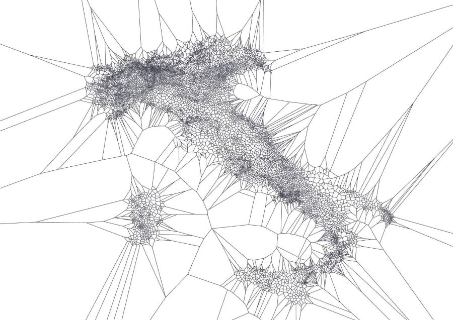

Simple PostGIS Reverse Geocoder¶

Given a geopoint, find the nearest city using PostGIS (reverse geocode).


📖 Documentation: https://hotosm.github.io/pg-nearest-city/
🖥️ Source Code: https://github.com/hotosm/pg-nearest-city
Why do we need this?¶
This package was developed primarily as a basic reverse geocoder for use within web frameworks (APIs) that have an existing PostGIS connection to utilise.
Simple alternatives:
- The reverse geocoding package in Python here is probably the original and canonincal implementation using K-D tree.
- However, it's a bit outdated now, with numerous unattended pull requests and uses an unfavourable multiprocessing-based approach.
- It leaves a large memory footprint of approximately 260MB to load the K-D tree in memory (see benchmarks), which remains there: an unacceptable compromise for a web server for such a small amount of functionality.
- The package here is an excellent revamp of the package above, and possibly the best choice in many scenarios, particularly if PostGIS is not available.
The pg-nearest-city approach:
- Is approximately ~20x more performant (45ms --> 2ms).
- Has a small ~8MB memory footprint, compared to ~260MB.
- However it has a one-time initialisation penalty of approximately 16s to load the data into the database (which could be handled at web server startup).
See benchmarks for more details.
[!NOTE] We don't discuss web based geocoding services here, such as Nominatim, as simple offline reverse-geocoding has two purposes:
- Reduced latency, when very precise locations are not required.
- Reduced load on free services such as Nominatim (particularly when running in automated tests frequently).
Priorities¶
- Lightweight package size.
- Minimal memory footprint.
- High performance.
How This Package Works¶
- Ingest geonames.org CSV data for cities over 1000 population.
- Create voronoi polygons based on city geopoints.
- Bundle the voronoi data with this package and load into Postgis.
- Query the loaded voronoi data with a given geopoint, returning the city.
The diagram below should give a good indication for how this works:

Usage¶
Install¶
Distributed as a pip package on PyPi:
pip install pg-nearest-city
# or use your dependency manager of choice
Run The Code¶
Async¶
from pg_nearest_city import AsyncNearestCity
# Existing code to get db connection, say from API endpoint
db = await get_db_connection()
async with AsyncNearestCity(db) as geocoder:
location = await geocoder.query(40.7128, -74.0060)
print(location.city)
# "New York City"
print(location.country)
# "USA"
Sync¶
from pg_nearest_city import NearestCity
# Existing code to get db connection, say from API endpoint
db = get_db_connection()
with NearestCity(db) as geocoder:
location = geocoder.query(40.7128, -74.0060)
print(location.city)
# "New York City"
print(location.country)
# "USA"
Create A New DB Connection¶
- If your app upstream already has a psycopg connection, this can be passed through.
- If you require a new database connection, the connection parameters can be defined as DbConfig object variables:
from pg_nearest_city import DbConfig, AsyncNearestCity
db_config = DbConfig(
dbname="db1",
user="user1",
password="pass1",
host="localhost",
port="5432",
)
async with AsyncNearestCity(db_config) as geocoder:
location = await geocoder.query(40.7128, -74.0060)
- Or alternatively as variables from your system environment:
PGNEAREST_DB_NAME=cities
PGNEAREST_DB_USER=cities
PGNEAREST_DB_PASSWORD=somepassword
PGNEAREST_DB_HOST=localhost
PGNEAREST_DB_PORT=5432
then
from pg_nearest_city import AsyncNearestCity
async with AsyncNearestCity() as geocoder:
location = await geocoder.query(40.7128, -74.0060)
Testing¶
Run the tests with:
docker compose run --rm code pytest
Benchmarks¶
Run the benchmarks with:
docker compose run --rm benchmark
Voronoi Generator¶
Overview¶
The pg-nearest-city package includes a Voronoi generator that creates the data used for efficient reverse geocoding. This utility downloads city data from GeoNames, processes it through PostGIS to compute Voronoi polygons, and exports the results as compressed WKB files that are bundled with the package.
Data Generation¶
The generator is containerized and can be run using Docker Compose:
docker compose run --rm voronoi-generator
This process:
- Downloads city data from GeoNames (cities with population > 1000)
- Processes the data through PostGIS spatial functions
- Generates two output files in pg_nearest_city/data/:
cities_1000_simple.txt.gz- Simplified city datavoronois.wkb.gz- Compressed WKB representation of Voronoi polygons
Configuration¶
The generator accepts the following configuration options:
--country- Filter to a specific country code (e.g., IT)--no-compress- Disable output compression--output-dir- Custom output directory
Updating Data¶
The pre-generated data files are bundled with the package, so manual regeneration is only necessary when:
- New GeoNames data becomes available and you want to update
- You need to filter for a specific geographic region
- You need to customize the data processing pipeline